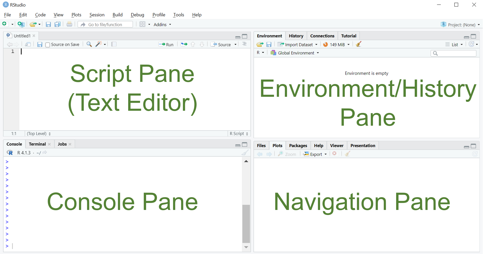

Welcome!
In this 1st post, the reader will be introduced to the R programming language and RStudio software.
Introduction
This blog aims to introduce new R/RStudio users to the fundamentals of R and lay the groundwork for more in-depth statistical analysis, data visualization, and reporting methods. I hope to present the topics in a straightforward manner so that anyone new to programming is not intimidated.
What is R?
R is a programming language and open-source (freely available) software invented by Ross Ihaka and Robert Gentleman in 1993 (published as open-source in 1995) when they were based at the University of Auckland. Fun fact: R represents the first letter of the first names of the creators. The software is utilized by individuals working for various organizations ranging from academic institutions and healthcare organizations to financial services and information technology companies. In May 2022, the TIOBE index (a measure of programming language popularity) demonstrated that R was the 13th most popular programming language. R’s popularity may result from its highly extensible nature that allows users to perform statistical data analysis, generate visualizations, and report findings.
What are the benefits of using R?
As mentioned in the previous section, R is an open-source software that is highly extensible. Thousands of extensions (also known as packages) can be installed, allowing one to increase the number of available applications. The main advantages of R include: 1. A large community of users and developers that can provide learning support and assist with technical challenges, 2. The ability to perform reproducible research. 3. Its cross-platform nature, which means that it can be used on Linux, Windows, and Mac operating systems. 4. The ability to generate high-quality graphics from datasets of varying dimensions.
I’m looking for R. Where can I find it?
To install R on your personal computer, visit The R Project for Statistical Computing’s Comprehensive R Archive Network (CRAN), download the most recent version, and install it according to the website’s instructions. Once you download R, you can now experiment with some of its features.
Figure 1: The standard R interface (Windows)
When you open R, you will notice that it has a basic graphical user interface (GUI), and the console displays a command-line interface (CLI; where each command is executed one at a time). This may be intimidating for new users; however, there is a workaround for those who are not comfortable working at the command line. For those who are not experienced programmers, R can be used with an application called RStudio.
What is RStudio and how does it differ from R?
RStudio is an integrated development environment (IDE) for R that was developed by JJ Allaire. This software contains tools that make programming in R easier. RStudio extends R’s capabilities by making it easier to import data, write scripts, and generate visualizations and reports. The RStudio IDE is available for download from the RStudio website.

Figure 2: RStudio interface with four main panes (Windows)
Once installed, the basic layout of RStudio reveals that there is a script (text editor), console, navigation, and environment/history window pane. The script pane (text editor) in the upper-left allows one to write, open, edit, and execute more extended programs compared with using the standalone R software. The console pane (bottom-left) displays the script’s output and offers a command-line interface for typing code that is immediately executed. The environment pane (upper-right) displays information about the created objects, the history of executed code, and any external connections. Finally, the navigation pane (bottom-right) shows multiple tabs. Its primary tabs include the “Plot” tab, which shows graphics created by code, the “Packages” tab where the packages are installed, and the “Help” tab, which provides assistance for all things R and allows one to search the R documentation.
What are the primary benefits of RStudio?
RStudio allows one to create projects (a collection of related files stored within a working directory). Additionally, RStudio can be customized using options available under the “Tools” tab. Lastly, RStudio has Git integration that allows for version control where you can back up your code at different timepoints and effortlessly transfer code between computers.1
Conclusion
Hopefully, this was a helpful introduction to R and RStudio. In subsequent blog posts, we will focus on:
Footnotes
Summary of the benefits of R and RStudio obtained from Lander, J. P. (2014). R for everyone: Advanced analytics and graphics. Addison-Wesley.↩︎